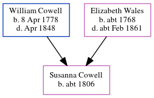

Susanna Cowell c1806 -
[ Home ] | [ Calendar ] | [ Surnames Index ] | [ Census Index ] | [ Family History ]The child of William Cowell and Elizabeth Wales, Susanna Cowell, the first cousin four-times-removed on the mother's side of Nigel Horne, was born in Kent, England c. 18061 and baptized in St Peters, Thanet, Kent, England on Feb 23, 1806. On Jun 6, 1841, she was living at George Hill Road, St Peters, Thanet, Kent1.
Parents
- William Castle was born on Apr 8, 1778
- Elizabeth was born c. 1768
Citations
- 1841 England, Wales & Scotland Census - Findmypast (was age 33 and the daughter of the head of the household)
Media
1841 England, Wales & Scotland Census Transcription - GBC-1841-0013965437
England Births & Baptisms 1538-1975 - R_889841428
Family Tree
Generated by ged2site. Last updated on Jun 11, 2024